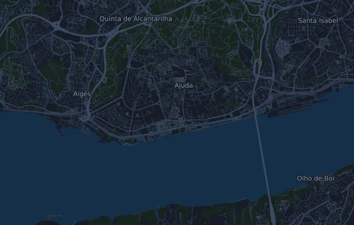

EDP Meia Maratona de Lisboa 21.2 km
- Distance
- 21.2 km
- Elevation gain
- ↑ 190 m
- Highest point
- 63 m a.s.l.
- Surface
- Road
- Profile
- Gently rolling
Elevation profile
Prepare with Mila
Mila is a running coach app. Add a race to your plan and the coach plans your weeks up to race day around your form, and gives you a finish-time forecast and a plan for pacing, drinks and fuel on the course.

The right run, on the right day.
The course

About the course
EDP Meia Maratona de Lisboa is a road race in Almada (Ponte 25 de Abril, Lisboa), Portugal, over 21.2 km. The course climbs 190 m and descends 244 m in total, 9.0 m per km, which makes it gently rolling. The highest point is 63 m above sea level and the lowest -1 m.
The biggest climb starts at km 0.1: 48 m of ascent over 3.4 km at 1.4 % on average, up to 47 m. In total the course has 4 climbs of at least 25 m; the last one starts at km 5.1.
In the Mila app, the coach describes the course in detail in your language and plans your pacing and fueling for it.
Climbs
| Starts at | Length | Gain | Gradient | Top (m above sea level) |
|---|---|---|---|---|
| km 0.1 | 3.4 km | 48 m | 1.4 % | 47 |
| km 3.7 | 360 m | 25 m | 7.0 % | 63 |
| km 4.3 | 530 m | 26 m | 4.8 % | 58 |
| km 5.1 | 820 m | 25 m | 3.1 % | 59 |
Pace table
EDP Meia Maratona de Lisboa 21.2 km in 1:30:00 – pace per km and splits
4:15 per km · km 5: 21:13 · km 10: 42:26 · km 15: 1:03:39 · finish: 1:30:00
EDP Meia Maratona de Lisboa 21.2 km in 1:45:00 – pace per km and splits
4:57 per km · km 5: 24:45 · km 10: 49:30 · km 15: 1:14:15 · finish: 1:45:00
EDP Meia Maratona de Lisboa 21.2 km in 2:00:00 – pace per km and splits
5:39 per km · km 5: 28:17 · km 10: 56:35 · km 15: 1:24:52 · finish: 2:00:00
EDP Meia Maratona de Lisboa 21.2 km in 2:15:00 – pace per km and splits
6:22 per km · km 5: 31:49 · km 10: 1:03:39 · km 15: 1:35:28 · finish: 2:15:00
The times assume an even pace the whole way. This is plain arithmetic, not a forecast: on climbs, in crowds and at aid stations the pace varies.
Frequently asked questions
When is EDP Meia Maratona de Lisboa 21.2 km?
EDP Meia Maratona de Lisboa 21.2 km takes place on Sunday, 7 March 2027. Check the date and start time with the organizer.
How long is EDP Meia Maratona de Lisboa 21.2 km and how much climbing is there?
The race is 21.2 km with 190 m of climbing and 244 m of descent. The highest point is 63 m above sea level.
What is the course of EDP Meia Maratona de Lisboa 21.2 km like?
The course is gently rolling, with 9.0 m of climbing per km on average. It has 4 climbs of at least 25 m; the biggest starts at km 0.1: 48 m over 3.4 km. It runs from the start to a finish in another place. The surface is road.
How should I pace EDP Meia Maratona de Lisboa 21.2 km?
Aim for an even effort rather than an even pace: let the pace drop on the climbs, win it back where it levels out, and hold back in the first kilometres. The biggest climbs start at km 0.1, km 3.7, km 4.3 and km 5.1. In Mila you get a pace plan for this course, based on your own form.
More races like this
More races nearby
- EDP Maratona de Lisboa 42.4 kmDate not set · Carcavelos (Cascais), Portugal
- Tokyo Marathon 2027 42.2 km7 March 2027 · Tokyo, Japan
- Six Foot Track Marathon 45 km13 March 2027 · Katoomba, Australia
Prepare with Mila
The right run, on the right day.
Details come from the course file and the organizer's information. Check the date, start times and rules with the organizer.
Mila is not affiliated with, sponsored by or endorsed by the organizer or the race's sponsors. Names and trademarks belong to their owners. Organizer or rights holder? Ask for a change or a removal